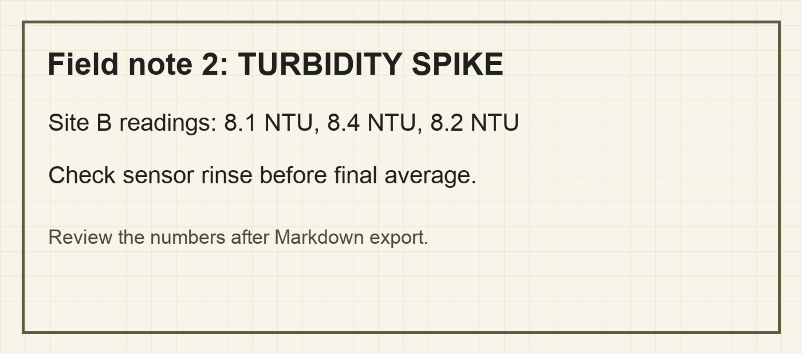

Reviewability sample pack
Inspect the source, Markdown, and audit sidecar before buying.
This is a safe synthetic research-methods document exported through PDF-MD's bounded Hybrid workflow. The point is reviewability: a useful Markdown draft, visible caveats, and enough audit material to inspect what happened.
Files
Open the PDF and Markdown side by side.
Honest output
The raster note is readable, but not perfect.

Why this matters
The generated Markdown keeps the important Site B readings visible, but also includes OCR roughness around nearby text. That is the right kind of proof for this product: inspectable output, not a promise that difficult pages never need correction.
Field note 2: TURBIDITY SPIKE Site B readings: 8.1 NTU, 8.4 NTU, 8.2 NTU Check sensor rinse betore tinal average
Soft purchase path
Use the sample first, then decide.
PDF-MD is available for Mac as a one-time purchase. The sample pack is here so you can inspect the source, output, and caveats before you reach the checkout.
Go to product pageReviewability beats hype
For academic and research PDFs, the safe promise is not perfect extraction. It is a visible workflow for turning difficult source material into Markdown you can check and keep.